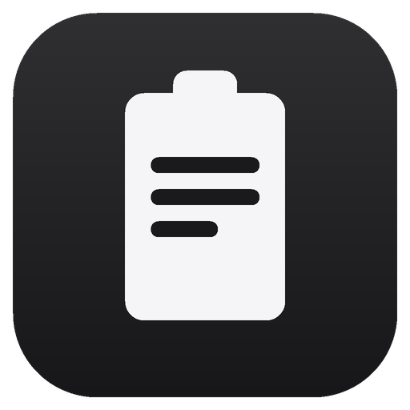

PasteNext一键管理你的每一次复制。无限历史、卡片式面板、看板收藏、笔记与标签 —— 数据仅存本地的轻量剪贴板管理器。
本地记录,随时找回,手不离键盘
后台自动捕获每一次复制:纯文本、富文本、图片、文件。重复复制自动置顶,永不丢失。
全局快捷键唤起,屏幕底部滑出全宽面板,横向卡片流带预览,方向键 + 回车即可粘贴。
把常用片段、代码、链接、模板整理进看板,双击标签页重命名,随取随用。
直接修改剪贴内容、为条目写备注、打标签;搜索同时命中笔记和标签,沉淀你的素材库。
密码管理器等应用中的复制不记录(按应用名 / Bundle ID 规则匹配),隐私可控。
所有数据仅保存在本机 SQLite,无账号、无云端、无追踪;可按 1/3/12 个月自动清理。
手不离键盘,一气呵成
从下载到用上,不超过一分钟
点击上方下载按钮,打开 DMG 后把 PasteNext.app 拖入「应用程序」。
应用未做 Apple 公证,首次打开可能提示「已损坏,无法打开」或「无法验证开发者」——应用本身没有问题,只是被 Gatekeeper 拦截了。在终端运行:
之后再打开即可。也可以:系统设置 → 隐私与安全性 → 底部点击「仍要打开」。
唤起面板时按提示授权「辅助功能」,即可自动粘贴;未授权时仍可复制后手动粘贴。
PasteNext-Windows-x64-setup.exe 双击安装;或下载 PasteNext-Windows-x64-portable.zip 解压即用,数据存放在程序同目录的 Data/ 文件夹,可随文件夹整体带走。